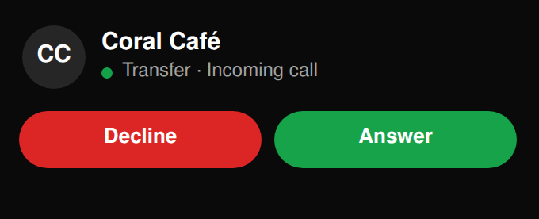

The Line on your computer. It rings with the window closed.
MWA Line is the studio's phone on the desktop: Transfers, Direct line calls, texts and Follow-up drafts, in a window of its own and in the tray. Sign in with your Team Member account.
Another computer? See every download.
MWA Line is for computers. Open this page on your Mac or PC, or use the Line in your phone's browser at portal.miamiweb.ai/line.

Every download
- macOS, Apple silicon Disk image (.dmg) Download for macOS on Apple silicon
- macOS, Intel Disk image (.dmg) Download for macOS on Intel
- Windows, 64-bit Installer (.exe) Download for Windows
- Linux, 64-bit AppImage Download the AppImage for Linux
- Arch Linux and Omarchy pacman package Download the pacman package for Arch Linux and Omarchy
Installed apps update themselves. When a new version is ready, MWA Line offers to restart into it, and never does during a call.
Installing it
macOS
- Open the .dmg you downloaded.
- Drag MWA Line into Applications.
- Open it from Applications and sign in. It walks you through the microphone, notifications and a ringtone.
Windows
- Run the installer.
- If Windows says it protected your PC, choose More info, then Run anyway. The installer isn't signed with a Windows certificate yet.
- Open MWA Line from the Start menu and sign in.
Linux
-
On Arch or Omarchy, install the package:
sudo pacman -U mwa-line-*-x64.pacman -
Anywhere else, make the AppImage runnable and open it:
chmod +x mwa-line-*.AppImage - If the AppImage says it can't start without its sandbox, the system blocks what Chromium's sandbox needs. Allow unprivileged user namespaces, or use the pacman package on Arch.
What it adds to the browser tab
- It keeps ringing
- Closing the window leaves MWA Line in the tray, and it starts when you log in, so calls ring all day.
- A call window over your work
- Who's calling, the timer, Mute and End call, or Answer and Decline, above whatever app you're in.
- Phone numbers open in the Line
- Click a number in a browser, an email or a contact, and the dialer opens with it filled in. Make MWA Line the default in its Settings.
- The keyboard you expect
- Settings with ⌘,, New call with ⌘N, search with ⌘K, and Ctrl in place of ⌘ on Windows and Linux.